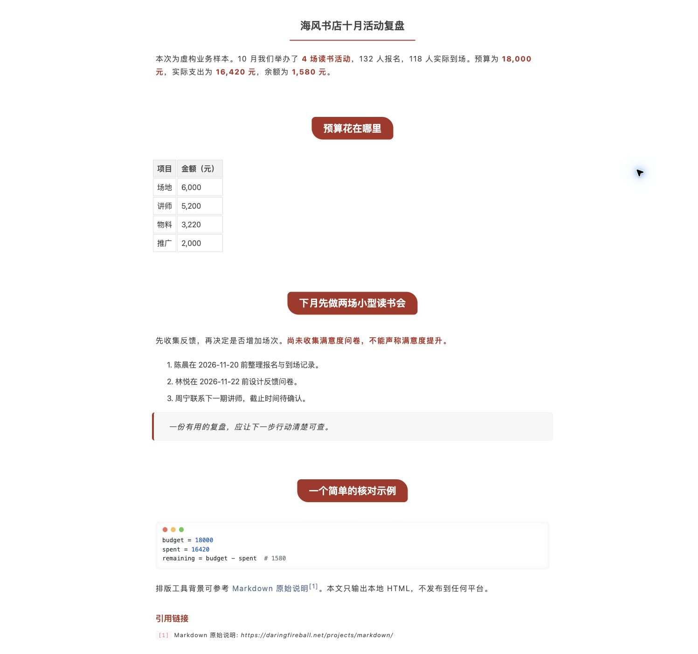
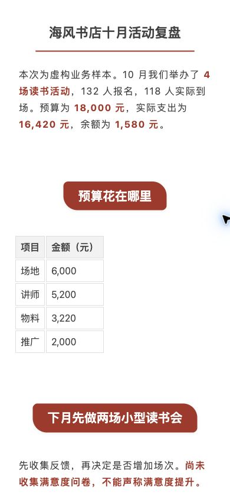

← 返回 Skill 详情semifly · 本地真实运行记录 · 2026-11-17 · 虚构测试材料
Markdown → 红色主题公众号 HTML
HTML 转换与预览通过实际安装 baoyu-markdown-to-html 及其锁定依赖，执行原始转换脚本，生成带标题、费用表、引用、代码块和行动清单的 HTML。
- 原脚本成功输出 HTML，9 项结构检查通过
- 真实浏览器桌面与 390px 移动宽度均可阅读，无横向溢出
- 保留 Markdown 来源链接、表格金额和“待确认”
本地 HTML 转换与浏览器预览已通过。2026-11-17 尝试访问公众号编辑器，被浏览器站点安全策略阻止；没有完成微信粘贴验收，也未发布。需人工粘贴核对后补证。
实际 HTML 的本地浏览器截图，不是微信编辑器截图；微信粘贴验收仍待完成。 未验证 OneAPI 模型组合。

实际产物 · 1 / 2
实际产物 · 2 / 2